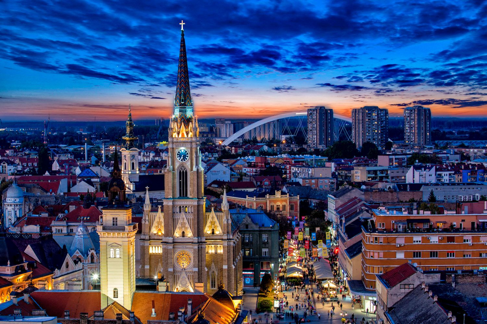
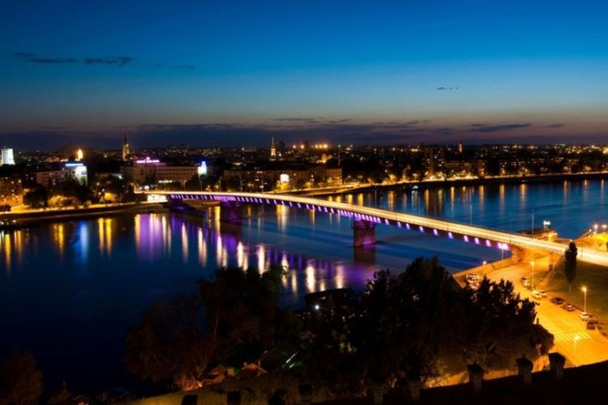
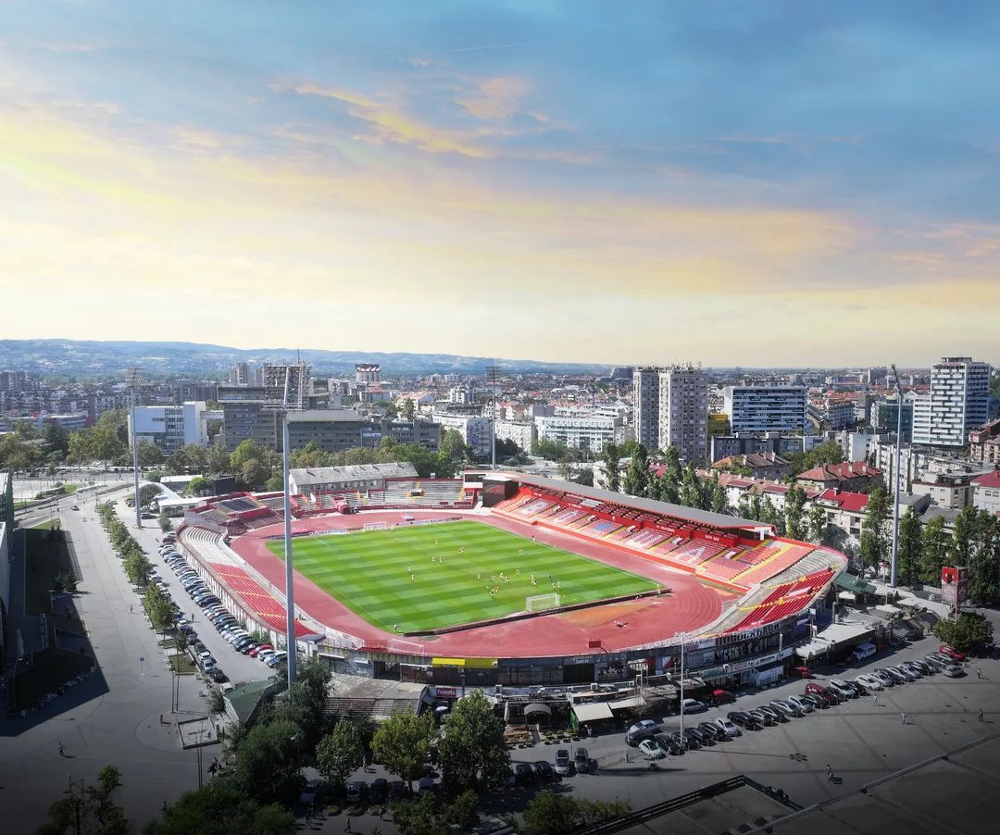

Нови Сад је други највећи град у Србији. Познат је по својој култури, историји, лепој архитектури и реци Дунав.

Нови Сад један је од најразвијенијих градова у југоисточној Европи, богат културом, традицијом и урбаним садржајима, препознат као веома погодно и подстицајно место за живот, рад и инвестирање.
Нови Сад центар, локација.
Град Нови Сад, званична презентација града Новог Сада.Варадински мост (претходно познат као Мост краљевића Томислава и Мост маршала Тита) јесте мост на Дунаву који се простире између Новог Сада и Петроварадина.

Мост представља један од препознатљивих симбола Новог Сада и важну саобраћајну везу.
Стадион Карађорђе налази се у Новом Саду. На њему своје утакмице игра фудбалски клуб Војводина.

Стадион „Карађорђе“ саграђен је 1924. године и од тада на њему своје утакмице играју фудбалери Војводине. Капацитет стадиона је 14.458 седећих места, при чему су наткривена седишта која се налазе на западној трибини. Стадион се налази у улици Димитрија Туцовића, на истом месту на којем је и саграђен.